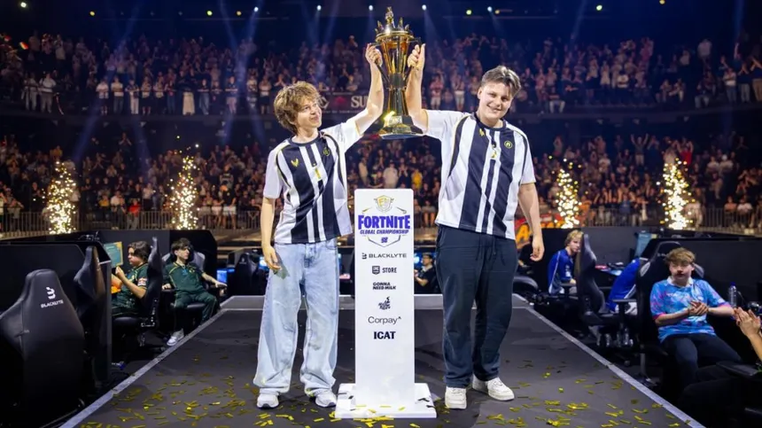

O que é a FNCS?
A FNCS (Fortnite Champion Series) é o principal campeonato competitivo de Fortnite, organizado pela própria Epic Games. Ela começou em 2019 e reúne os melhores jogadores do mundo disputando partidas valendo prêmios em dinheiro.
Cada temporada da FNCS dura alguns meses e termina com uma grande final.
Como funciona?
Os jogadores competem em equipes, e cada partida vale pontos:
- Eliminações: cada adversário eliminado dá pontos.
- Colocação: quanto mais tempo a equipe sobrevive, mais pontos ganha.
- Vitória Royale: ser a última equipe viva dá a maior pontuação.
O caminho até o título é dividido em etapas:
- Qualificatórias online
- Semifinais
- Grande Final da temporada
- Global Championship (o mundial!)
Global Championship
É a final mundial da FNCS, onde os melhores de todas as regiões se enfrentam presencialmente. Alguns lugares onde ela já aconteceu:
| Ano | Cidade | País |
|---|---|---|
| 2023 | Copenhague | Dinamarca |
| 2024 | Fort Worth | Estados Unidos |
| 2025 | Lyon | França |
Ganhadores da FNCS

Curiosidades
- O Brasil é uma das regiões mais fortes e competitivas do Fortnite.
- Os campeonatos são transmitidos ao vivo na Twitch e no YouTube.
- Muitos jogadores profissionais começaram jogando só por diversão!
Quer saber mais? Acesse o site oficial do competitivo.
Vídeo
Não carregou? Assista no YouTube.
Quer jogar também? Veja como participar da FNCS.